📑 文章目录（11 节）
本文将为大家详细讲解 beatmania IIDX（弐寺）的指法（运指）。
文中详细介绍了应该优先练习哪些指法，以及各类指法的特点和优缺点，只要认真读完，今后就不会再为指法选择而迷茫了。
※键位编号（1号～7号键）按下图所示方式标注。
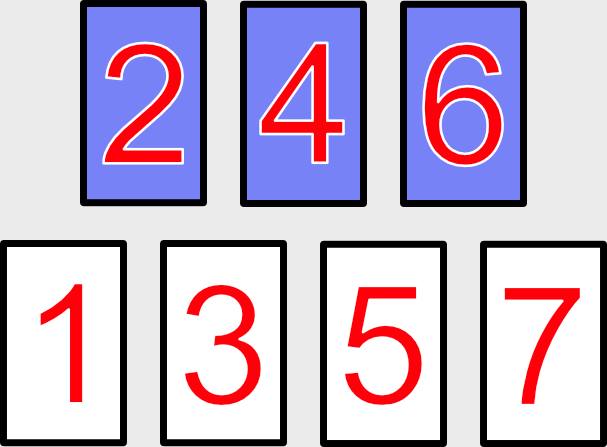
【怕麻烦的读者专享】效率优先的指法学习步骤
如果让我从零开始玩 IIDX（弐寺），我会按照以下顺序练习并掌握指法。
- 固定非转盘侧的手指

1P 侧的情况 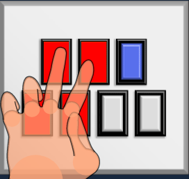
2P 侧的情况 首先，将非转盘侧的手固定成这个手型。无论以后学哪一种指法，非转盘侧全人类都是这套摆法。
手指 1P 侧（右手） 2P 侧（左手） 食指 4号键 4号键 拇指 5号键 3号键 中指 6号键 2号键 无名指或小指 7号键 1号键 用无名指还是小指，选自己觉得顺手的即可。后文会详细说明。
- 掌握 1048式（Toshiya 式）
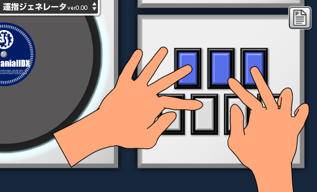

刚入坑时转盘侧随便按也没关系，但稍微熟悉之后，就可以开始练习 1048式（从靠近转盘侧依次为拇指・中指・食指）。
1048式是一种无论键盘还是转盘都很强，而且能无缝过渡到手腕搓盘（手首皿）的万能指法。刚开始开着自动搓盘（Auto Scratch）也无所谓，先习惯这个手型吧。
以下文章详细讲解了 1048式的技巧。
- 掌握 3:5 半固定
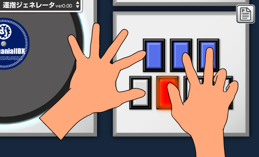
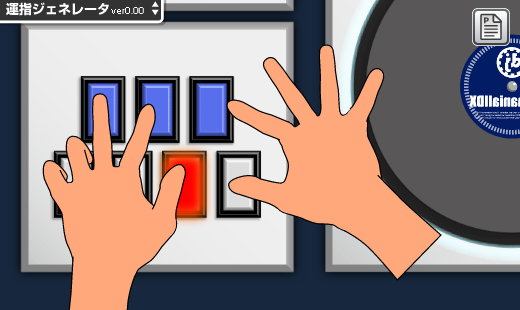
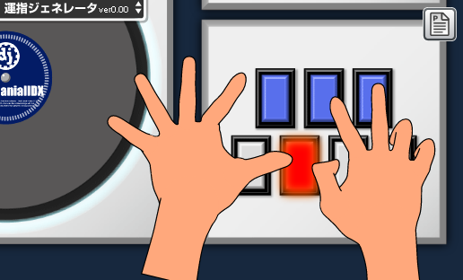
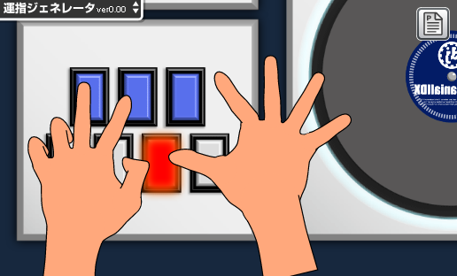
接下来需要掌握的是遇到带皿配置变指（崩指）时的基础指法“3:5 半固定”。它的关键在于判断 3号键（2P 为 5号键）该用左手还是右手的拇指来补位。
刚开始很多人很难把非转盘侧的拇指伸过去，所以在习惯手型之前，可以先固定用非转盘侧去补位（上方图示的形态）来练习，等熟练之后再根据情况灵活切换。
- 掌握拇指平按（亲指ベチャ押し）

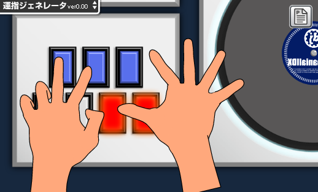
拇指平按（亲指ベチャ押し）是在遇到带皿配置、来不及判断该用左手还是右手补位时使用的应急型指法。1⇔3 键可以通过拇指根部压按，或者用拇指滑动来接。
处理皿复合的理想状态是用 3:5 半固定漂亮地补位，但其实光靠这招拇指平按，大部分配置也都应付得来。
步骤 5 之后属于高手向的进阶技巧。在考取皆传之前，不学也没关系。
- 掌握手腕搓盘（手首皿）


手腕搓盘（手首皿）的强项在于可以保持 1048式手型不变，在高密度＋皿复合配置下完全无需变指。
虽然手腕搓盘在如今的时代已经逐渐成为必备技巧，但说实话，除了 ☆12 的一部分谱面之外并不刚需。在拿到皆传之前，不需要勉强去练。
- 为了皿曲去练习单手打法
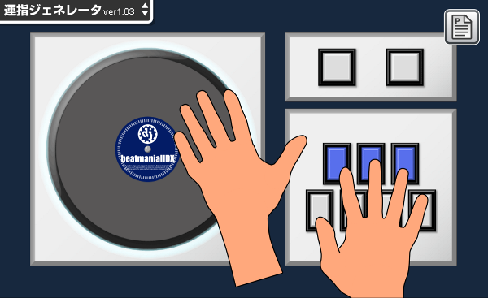
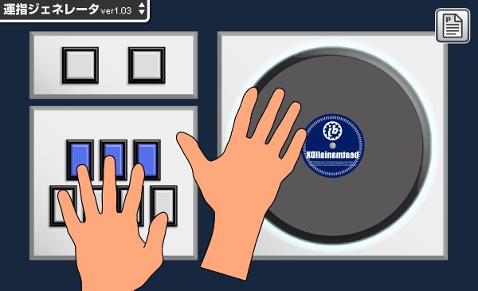
想要稳定把连皿打出发光（P-GREAT），单手打法就是最强的解法。想把连皿曲练到极致的玩家一定要练一练。
玩 DP（双打）在一定程度上也能起到练习效果。
DOLCE式、quasar式和对称固定不用练吗？
作为主力的固定指法，只学 1048式就完全够用了。理由如下：
- 最终能够无缝衔接手腕搓盘的只有 1048式
- 多学一套指法，所需的练习量也会成倍增加
- 相比于频繁切换指法，靠完全固定来强化读谱能力和硬件体能才是如今 beatmania 的主流打法
那干脆只练 1048式＋手腕搓盘不就行了？
这样倒也不是不行，但以后遇到连皿曲会吃大亏的。如果觉得 3:5 半固定太难，至少也要把拇指平按（＋滑动）练会。
我想练习新指法，但在机厅练总觉得不好意思/有心理负担。
那就入坑 INFINITAS 吧（硬广）。只要把环境搭好，每月 1,628 日元就能想怎么练就怎么练。
无名指 VS 小指
关于 7号键（2P 侧为 1号键）到底该用无名指还是小指来按，两者各有优缺点，所以选自己顺手的就行。
如果已经习惯了其中一种，就完全没必要刻意去改。
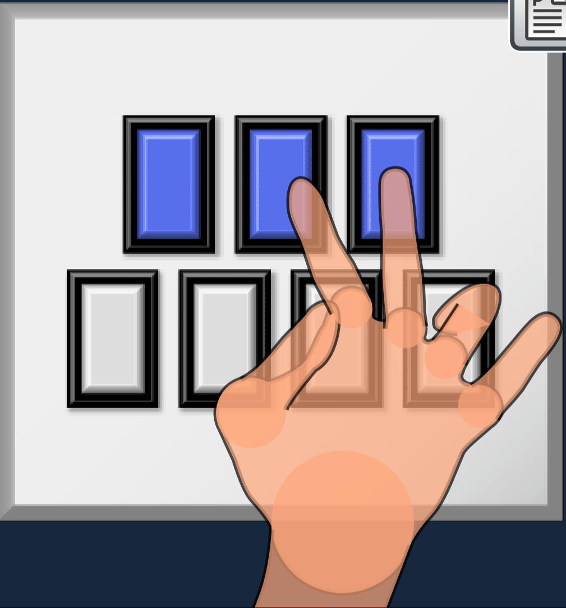 无名指 | 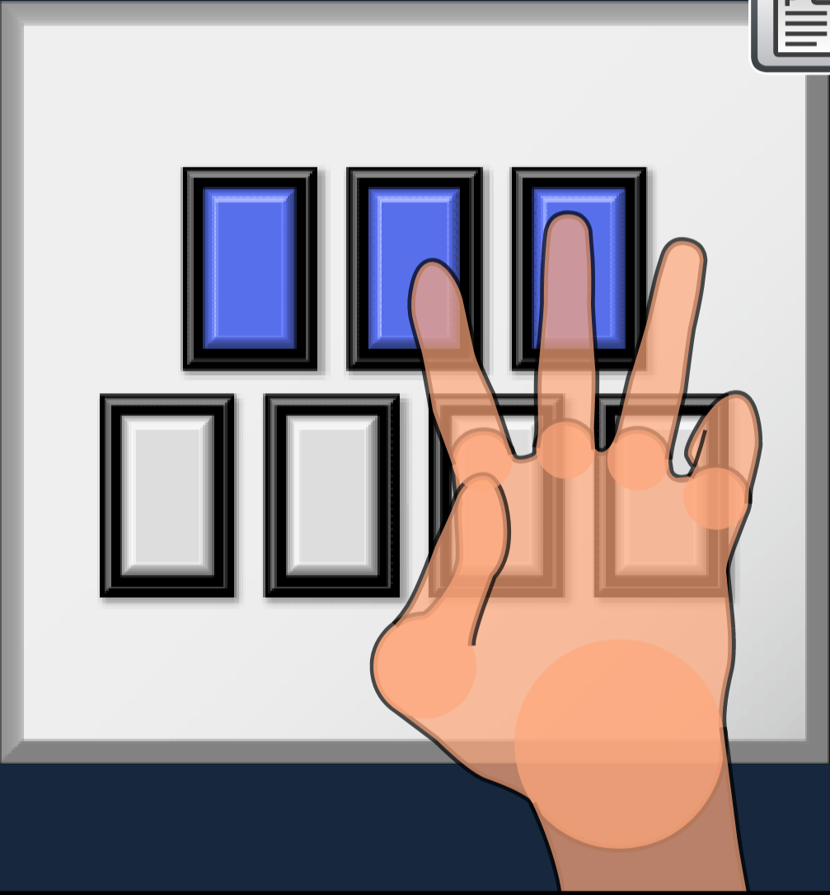 小指 | |
|---|---|---|
| 按键力度 | ||
| 手指独立性 | ||
| 与单手打法的契合度 |
一般来说，手指力量是无名指更强，而独立性和灵活度则是小指更胜一筹。给人的感觉是纵连更容易用无名指打，而 67 交互则是小指更好打。
由于单手打法中是以小指放在 7号键作为基准键位（Home Position），因此在遇到皿曲等需要变指成单手时，小指的契合度更高，违和感更小。
我自己原本是用小指的，但自从 Lightning Model 筐体以 50g 微动开关＋50g 弹簧成为标准配置后，我觉得小指按起来太费劲了，于是就改成了无名指。
改完不到一个月就适应了，所以无名指和小指就算以后再改也没那么难。凭感觉随便定一个就行。
各大知名指法的优缺点详解
※如无特别说明，下文键位编号均按 1P 侧标注。
1048式（Toshiya 式）
- 左拇指
- 左中指
- 左食指
- 右食指
- 右拇指
- 右中指
- 右无名指（右小指）
- 易于过渡到手腕搓盘（手首皿）
- 擅长 12 交互、23 交互
- 小指离转盘近，变指毫无多余动作
- 13 交互稍微有点难
- 一开始不太容易上手适应
1048式是无论打键盘还是搓盘都很强的万能指法。如果不知道选什么，先学 1048式准没错。
因为手型不太符合直觉，刚开始会觉得比较难，但绝对值得花时间去掌握。
关于 1048式的详细内容，请参阅以下文章。
3:5 半固定
- 左拇指
- 左食指
- 左拇指 或 右拇指
- 右食指
- 右拇指
- 右中指
- 右无名指（右小指）
- 擅长应对皿复合与连皿
- 与其他固定指法的相性很好
- 面对键盘为主的谱面较弱
3:5 半固定是去搓转盘时的手型。基本上需要与其他固定指法搭配使用。
搓盘基本靠小指，但在有余力的时候，用小指和无名指一起去搓会更稳。
不擅长 3:5 半固定的玩家，在习惯之前可以先试着用下面这套指法完全固定来练：
- 左拇指
- 左食指
- 右拇指
- 右食指
- 右无名指
- 右中指
- 右小指
在 3:5 半固定中，用右拇指去补 3号键时，5号键就会空出来；如果能学会用右无名指去补 5号键，用起来就会顺手得多。
拇指平按（亲指ベチャ押し）
- 左拇指
- 左食指
- 左拇指
- 右食指
- 右拇指
- 右中指
- 右无名指（右小指）
- 擅长应对皿复合与连皿
- 与其他固定指法的相性很好
- 面对键盘为主的谱面较弱
- 转盘侧拇指的负担很大
拇指平按是在搓盘的同时也能在一定程度上兼顾键盘的指法。它是在“转盘和键盘都很忙，根本没空变指”时使用的应急型指法。
遇到 1+3+皿 时，感觉上是用拇指尖和拇指根部一起压下去。1⇔3 则是通过滑动拇指来接。
不会手腕搓盘的玩家如果不掌握这招，到了 ☆12 上位谱面会直接卡死，所以请务必练会。
手腕搓盘完全固定（手首皿完全固定）
- 左拇指
- 左中指
- 左食指
- 右食指
- 右拇指
- 右中指
- 右无名指（右小指）
- 无论什么配置都能不变指直接硬接
- 不用思考变指，更容易专注于键盘
- 不擅长应对连皿和反拍转盘
- 13 交互稍微有点难
手腕搓盘完全固定就是用手腕来拨动转盘，从而全程保持 1048式专注于键盘的指法。
自从新筐体（LM）的转盘灵敏度提升之后，即使是用手腕搓盘也能在一定程度上打连皿了，因此绝大多数谱面靠这一套指法就能覆盖。
话虽如此，要想把连皿或者 8 分皿复合打出发光（P-GREAT），用手腕搓还是比正常用手搓要难。可以说是一门面向高手的进阶技巧。
对称固定
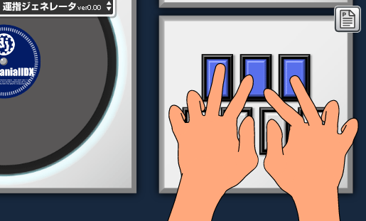
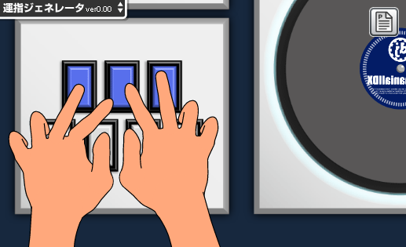
- 左无名指
- 左中指
- 左拇指
- 左食指 或 右食指
- 右拇指
- 右中指
- 右无名指（右小指）
- 可以用转盘侧的手帮忙补 4号键
- 擅长应对逆割配置或歪谱（烂随机）配置
- 符合直觉，新手也很容易上手
- 12 交互稍微有点难
- 难以过渡到手腕搓盘（手首皿）
对称固定顾名思义，就是以左右对称的手型按键的指法。它最大的优点是转盘侧的手可以帮忙补 4号键，从而减轻非转盘侧的负担。
与转盘侧手型比较特殊的 1048式不同，对称固定很符合直觉、容易记住，所以也很推荐给新手。
不过，由于 12 交互需要用中指和无名指来打，一旦进入高密度就会稍微有点吃力。
DOLCE式
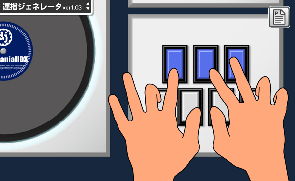

- 左中指
- 左食指
- 左拇指
- 右食指
- 右拇指
- 右中指
- 右无名指（右小指）
- 符合直觉，新手也很容易上手
- 容易变指成 3:5 半固定
- 擅长 13 交互和 3 键纵轴谱面
- 12 交互稍微有点难
- 难以过渡到手腕搓盘（手首皿）
DOLCE式是鼎鼎大名的 DOLCE. 选手经常使用的指法。
它非常直观好记，只要把转盘侧的手张开就能直接变成 3:5 半固定的形态，因此也很推荐给新手。
用中指和食指打 12 交互会稍微难一点，但习惯之后完全不是问题。
关于具体的手指摆放方式以及与 1048式的区别，可以参考以下文章的详细解说。
quasar式
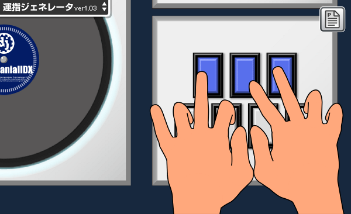

- 左无名指
- 左中指
- 左食指
- 右食指
- 右拇指
- 右中指
- 右无名指（右小指）
- 符合直觉，新手也很容易上手
- 擅长 13 交互
- 12 交互很难
- 极其不擅长带皿配置
quasar式是当年凭借家用机版（CS）游玩视频风靡一时的 quasar 氏的基本指法。
虽然符合直觉、容易记住，但因为 12 交互是用中指和无名指来按，一旦进入高密度就会非常吃力。
此外，由于转盘侧完全不用拇指，导致打皿复合非常困难。
quasar式的优点！
— あのquasar (@quasar_DPA) December 5, 2016
・逼得你不得不去学其他指法的修行指法
quasar式的缺点！
・打不了皿复合
・完全打不了皿复合
・总之就是打不了皿复合
・压根就打不了皿复合
・那干脆全打皿曲去练吧！
・结果只有搓盘变强了←现状
目前以 quasar式为主力的玩家，还是尽早学习其他指法吧。
关于具体的手指摆放方式以及与 1048式的区别，可以参考以下文章的详细解说。
总结
- 以 1048式作为基本指法
- 用 3:5 半固定和拇指平按（亲指ベチャ押し）应对转盘
- 通过手腕搓盘（手首皿）和单手打法进一步进阶
基本上这套路线最适合大多数人，效率也最高。
虽然从一开始就只用 1048式＋手腕搓盘的话，键盘水平提升会很快，但到了皆传的 灼熱 等连皿曲可能会卡死。
不过这也因人而异，抱着“转盘以后再练也行”的想法其实也完全没问题。
如果已经习惯了 DOLCE式或对称固定，而且不打算练手腕搓盘的话，也没必要勉强改指法。这同样因人而异。
以上就是关于 IIDX（弐寺）指法（运指）的全部讲解。
💬 读者评论与作者答疑（5 组对话）